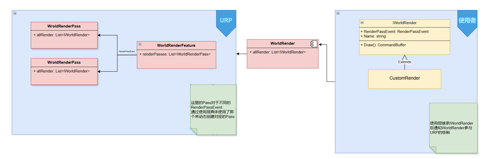

场景:slg大地图中很多物件重复性很高的东西,非常适合GpuInstance来绘制它们,省去GameObject部分的消耗
方案：

一个地块
使用者的代码
1 2 3 4 5 6 7 8 public interface IWorldRenderer { string Name { get ; } RenderPassEvent RenderPassEvent { get ; } --定义渲染时机 CommandBuffer Draw () ; --具体执行的渲染命令 }
UPR的代码
1 2 3 4 5 6 7 8 9 10 11 12 13 14 15 16 17 18 19 20 21 22 23 24 25 26 27 28 29 30 31 32 33 34 35 36 37 38 39 40 41 42 43 44 45 46 47 48 49 50 51 52 53 54 55 56 57 58 59 60 61 62 63 64 65 66 67 68 69 70 71 72 73 74 75 76 77 78 79 80 81 82 83 84 85 86 87 88 89 90 91 92 93 94 95 96 97 98 99 100 101 102 103 104 105 106 107 108 109 110 111 112 113 114 115 116 117 118 119 120 121 122 123 124 125 126 127 128 129 130 131 132 public class WorldGPUInstanceRenderFeature : ScriptableRendererFeature { private List<WorldGPUInstanceRenderPass> _renderPasses = new List<WorldGPUInstanceRenderPass>(); private Camera _mainCamera; public override void Create () { _mainCamera = Camera.main; } public override void AddRenderPasses (ScriptableRenderer renderer, ref RenderingData renderingData ) { if (_renderPasses == null || _renderPasses.Count <= 0 ) return ; var camera = renderingData.cameraData.camera; if (camera == null ) return ; for (int i = 0 , len = _renderPasses.Count; i < len; ++i) { if (ReferenceEquals(camera, _mainCamera)) { renderer.EnqueuePass(_renderPasses[i]); } } } public void AddRenderer (IWorldRenderer renderer ) { if (renderer == null ) return ; _renderPasses = _renderPasses ?? new List<WorldGPUInstanceRenderPass>(); var passEvent = renderer.RenderPassEvent; WorldGPUInstanceRenderPass pass = null ; for (int i = 0 , len = _renderPasses.Count; i < len; ++i) { if (_renderPasses[i].renderPassEvent == passEvent) { pass = _renderPasses[i]; break ; } } if (pass == null ) { pass = new WorldGPUInstanceRenderPass(); pass.renderPassEvent = passEvent; _renderPasses.Add(pass); } pass.AddRenderer(renderer); } public void RemoveRenderer (IWorldRenderer renderer ) { if (renderer == null || _renderPasses == null ) return ; var passEvent = renderer.RenderPassEvent; WorldGPUInstanceRenderPass pass = null ; for (int i = 0 , len = _renderPasses.Count; i < len; ++i) { if (_renderPasses[i].renderPassEvent == passEvent) { pass = _renderPasses[i]; break ; } } pass?.RemoveRenderer(renderer); } public void ClearAllPass () { _renderPasses?.Clear(); } } public class WorldGPUInstanceRenderPass : ScriptableRenderPass { private List<IWorldRenderer> _worldRenderers = new List<IWorldRenderer>(); public void AddRenderer (IWorldRenderer renderer ) { if (_worldRenderers == null ) return ; if (_worldRenderers == null ) { _worldRenderers = new List<IWorldRenderer>(); _worldRenderers.Add(renderer); } else if (!_worldRenderers.Contains(renderer)) { _worldRenderers.Add(renderer); } } public void RemoveRenderer (IWorldRenderer renderer ) { if (_worldRenderers == null ) return ; _worldRenderers?.Remove(renderer); } public override void Execute (ScriptableRenderContext context, ref RenderingData renderingData ) { if (_worldRenderers == null || _worldRenderers.Count <= 0 ) return ; for (int i = 0 , len = _worldRenderers.Count; i < len; ++i) { var renderer = _worldRenderers[i]; CommandBuffer cmd = renderer?.Draw(); if (cmd != null ) { context.ExecuteCommandBuffer(cmd); cmd.Clear(); CommandBufferPool.Release(cmd); } } } }
桥梁的代码
1 2 3 4 5 6 7 8 9 10 11 12 13 14 15 16 17 18 19 20 21 22 23 24 25 26 27 28 29 30 31 32 33 34 35 36 37 38 39 40 41 42 43 44 45 46 47 48 49 50 51 52 53 54 55 56 57 58 59 60 61 62 63 64 65 66 67 68 69 70 71 72 73 74 75 76 77 78 79 80 81 82 83 84 85 86 87 88 89 90 91 92 93 94 95 96 97 98 99 100 101 102 103 104 105 public static class WorldRender { public static WorldGPUInstanceRenderFeature RenderFeature { get ; private set ; } public static bool DeviceSupportInstancing { get ; private set ; } private static List<IWorldRenderer> _allRenderers; public static void Init () { if (RenderFeature != null ) { RenderFeature.SetActive(true ); return ; } DeviceSupportInstancing = SystemInfo.supportsInstancing; RenderFeature = UniversalRenderPipeline.asset.scriptableRenderer.GetRendererFeature<WorldGPUInstanceRenderFeature>(); if (RenderFeature == null ) { var pipeline = QualitySettings.renderPipeline as UniversalRenderPipelineAsset; FieldInfo propertyInfo = pipeline.GetType() .GetField("m_RendererDataList" , BindingFlags.Instance | BindingFlags.NonPublic); ScriptableRendererData scriptableRendererData = ((ScriptableRendererData[])propertyInfo?.GetValue(pipeline))?[0 ]; if (scriptableRendererData != null ) { var newFeature = ScriptableObject.CreateInstance<WorldGPUInstanceRenderFeature>(); if (newFeature != null ) { Debug.Log($"[WorldRender]Dynamic create feature..." ); newFeature.name = $"GPUInstancingRender[Dynamic]" ; scriptableRendererData.rendererFeatures.Insert(0 , newFeature); RenderFeature = newFeature; } } if (RenderFeature) { RenderFeature.SetActive(true ); Debug.Log($"[WorldRender]Set feature active true" ); } } RenderFeature.SetActive(true ); } public static void Dispose () { if (RenderFeature) { RenderFeature.ClearAllPass(); RenderFeature.SetActive(false ); Debug.Log($"[WorldRender]Set feature active false" ); } _allRenderers?.Clear(); } public static void AddRenderer (IWorldRenderer renderer ) { if (!DeviceSupportInstancing) { Debug.LogWarning("Add renderer failed. Device not support instancing!" ); return ; } if (RenderFeature == null ) { Debug.LogWarning("Add renderer failed. Feature is null" ); return ; } _allRenderers = _allRenderers ?? new List<IWorldRenderer>(); if (!_allRenderers.Contains(renderer)) { _allRenderers.Add(renderer); RenderFeature.AddRenderer(renderer); } else { Debug.LogError($"WorldRender.AddRenderer {renderer.Name} failed. Already exist." ); } } public static void RemoveRenderer (IWorldRenderer renderer ) { if (renderer == null ) return ; if (_allRenderers.Remove(renderer)) { RenderFeature?.RemoveRenderer(renderer); } } }
使用者通过创建具体的绘制逻辑注册到WorldRender即可使用了